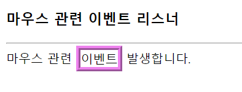
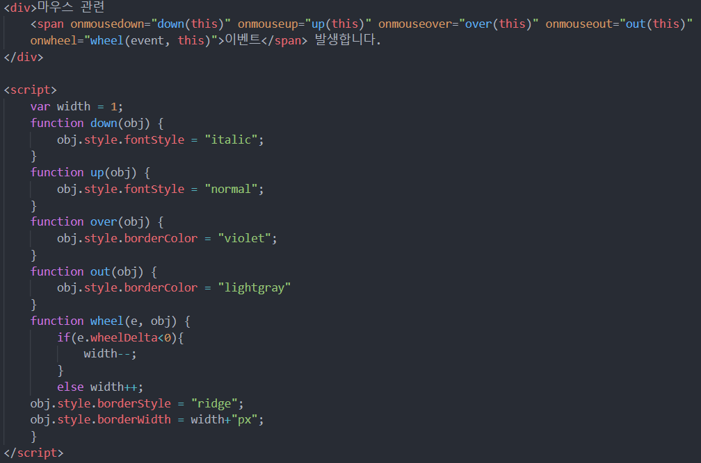

1. 마우스 이벤트 객체의 프로퍼티
- x, y : (x, y)는 타겟 객체의 부모 객체 내에서의 마우스 좌표
- clientX, clientY : (clientX, clientY)는 브라우저 윈도우의 문서출력 영역 내에서의 마우스의 좌표
- screenX, screenY : (screenX, screenY)는 스크린을 기준으로 한 마우스 좌표
- offsetX, offsetY : (offsetX, offsetY)는 타겟 객체 내에서의 마우스 좌표
- button : 눌러진 마우스 버튼
- 0 : 아무 버튼도 눌러지지 않았음
- 1 : 왼쪽 버튼이 눌러졌음
- 2: 오른쪽 버튼이 눌러졌음
- 3 : 왼쪽 오른쪽 버튼이 모두 눌러졌음
- 4 : 중간 버튼이 눌러졌음
- wheelDelta : 마우스 휠이 구른 방향
: HTML태그에 마우스 휠을 구르는 동안 계속 호출
- 양수 : 위쪽으로 굴린 경우(실제 wheelDelta 값은 120)
- 음수 : 아래쪽으로 굴린 경우(실제 wheelDelta 값은 -120)
EX)
obj.onwheel = function(e){
if(e.wheelDelta < 0) { // 아래쪽으로 휠을 굴린 경우
...
}
else{ //위쪽으로 휠을 굴린 경우
...
}
}
2. 마우스 관련 이벤트
- onclick : 클릭했을 때
- ondblclick : 더블클릭했을 때
- onmousedown : 마우스 버튼을 누르는 순간
- onmouseup : 눌러진 마우스 버튼이 놓여지는 순간
- onmouseover : 마우스가 객체 위로 올라오는 순간. 자식 영역 포함
- onmouseout : 마우스가 객체 위를 벗어나는 순간. 자식 영역 포함
- onwheel : 마우스 휠을 구르는 동안 계속 호출
- onmousemove : 마우스가 움직이는 동안 계속 호출됨
- oncontextmenu : 마우스 오른쪽 버튼을 클릭할 때 출력되는 메뉴 제어
3. oncontextmenu
: HTML 태그 위에 마우스 오른쪽 버튼 클릭
- 디폴트로 컨텍스트 메뉴(context menu) 출력
- '소스보기'나 '이미지 다운로드' 등의 메뉴 존재
- 컨텍스트 메뉴가 출력되기 전에 oncontextmenu 리스너가 먼저 호출됨
- oncontextmenu 리스너가 false를 리턴하면 컨텍스트 메뉴를 출력하는 디폴트 행동 취소
EX)
document.oncontextmenu = function () {
...
return false; // 컨텍스트 메뉴 출력 금지
}
4. 예제 ; 마우스 이벤트 리스너

- '이벤트' 글씨 위에서 마우스를 굴리거나 내리거나 누르거나 등등 이벤트가 발생 할 때 마다
각각 다른 이벤트 지정
- ex. 글씨 색 변경, 테두리 굵기 변경 등
예시 코드
